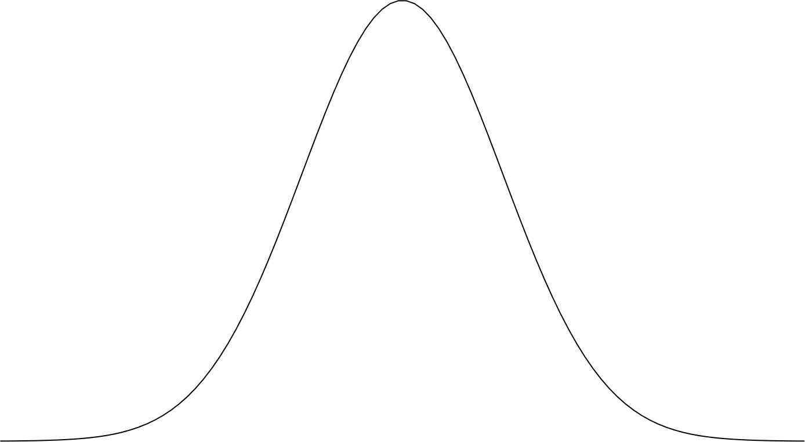

HdrHistogram
l'outil indispensable pour mesurer la latence
MYSELF
Alexandre Victoor
Architecte à la SGCIB
alexvictoor@gmail.com
https://github.com/alexvictoor
@alex_victoor
@giltene
HdrHistogram


Every 100ms of latency costs Amazon 1% of profit
DON'T BE MEAN BE ABOVE AVERAGE
| Site | Requêtes | (1 - 0.99^n) * 100% |
|---|---|---|
| devoxx.fr | 139 | 75% |
| fnac.fr | 163 | 81% |
| voyages-sncf.com | 175 | 83% |
| lemonde.fr | 547 | 99% |
DEMO
L'API
long before = System.nanoTime();
// ce que l'on mesure
SUT.call();
long duration = System.nanoTime() - before;
histogram.recordValue(duration);L'API
long before = System.nanoTime();
// ce que l'on mesure
SUT.call();
long duration = System.nanoTime() - before;
histogram.recordValue(duration);L'API
// initialisation
Histogram histogram = new Histogram(Long.MAX_VALUE, 3);
// enregistrement
histogram.recordValue(duration);
// consultation
histogram.getValueAtPercentile(99);
histogram.getValueAtPercentile(99.9);L'API
// initialisation
Histogram histogram = new Histogram(Long.MAX_VALUE, 3);
// enregistrement
histogram.recordValue(duration);
// consultation
histogram.getValueAtPercentile(99);
histogram.getValueAtPercentile(99.9);L'API
// initialisation
Histogram histogram = new Histogram(Long.MAX_VALUE, 3);
// enregistrement
histogram.recordValue(duration);
// consultation
histogram.getValueAtPercentile(99);
histogram.getValueAtPercentile(99.9);DEMO JS
const histogram = hdr.build();
setInterval(() => {
const before = performance.now();
fetch("ping.json")
.then(_ => {
const latencyInMicro = floor((performance.now() - before) * 1000); // NA micro sec
histogram.recordValue(latencyInMicro);
});
}, 100);
histogram.getTotalCount(); // NA
histogram.maxValue // NA micro sec
histogram.getValueAtPercentile(99.9); // NA micro sec
histogram.getValueAtPercentile(99); // NA micro sec
histogram.getValueAtPercentile(50); // NA micro secDEMO JS
const histogram = hdr.build();
setInterval(() => {
const before = performance.now();
fetch("ping.json")
.then(_ => {
const latencyInMicro = floor((performance.now() - before) * 1000); // NA micro sec
histogram.recordValue(latencyInMicro);
});
}, 100);
histogram.getTotalCount(); // NA
histogram.maxValue; // NA micro sec
histogram.getValueAtPercentile(99.9); // NA micro sec
histogram.getValueAtPercentile(99); // NA micro sec
histogram.getValueAtPercentile(50); // NA micro secDEMO JS
const histogram = hdr.build();
setInterval(() => {
const before = performance.now();
fetch("ping.json")
.then(_ => {
const latencyInMicro = floor((performance.now() - before) * 1000); // NA micro sec
histogram.recordValue(latencyInMicro);
});
}, 100);
histogram.getTotalCount(); // NA
histogram.maxValue // NA micro sec
histogram.getValueAtPercentile(99.9); // NA micro sec
histogram.getValueAtPercentile(99); // NA micro sec
histogram.getValueAtPercentile(50); // NA micro secDEMO JS
histogram.outputPercentileDistribution();
NAComment ça marche ?
"Internally, data in HdrHistogram variants is maintained using a concept somewhat similar to that of floating point number representation: Using an exponent a (non-normalized) mantissa to support a wide dynamic range at a high but varying (by exponent value) resolution. AbstractHistogram uses exponentially increasing bucket value ranges (the parallel of the exponent portion of a floating point number) with each bucket containing a fixed number (per bucket) set of linear sub-buckets (the parallel of a non-normalized mantissa portion of a floating point number). Both dynamic range and resolution are configurable, with highestTrackableValue controlling dynamic range, and numberOfSignificantValueDigits controlling resolution."
long counts[]
| 7 |
| +1 |
| 0 | 0 | 0 | 0 | 0 | 0 | 0 | 0 | 0 | 0 | 0 | 0 | 0 | 0 | 0 | 0 |
long counts[]
| 0 | 0 | 0 | 0 | 0 | 0 | 0 | 1 | 0 | 0 | 0 | 0 | 0 | 0 | 0 | 0 |
long counts[]
| 0 | 4 | 1 | 0 | 3 | 8 | 4 | 1 | 9 | 2 | 1 | 0 | 0 | 7 | 2 | 0 |
High
Dynamic
Range
123 000
123 999
123 042
Buckets & Sub buckets
49 Mo
25 Ko
Un petit benchmark
for (int i = 0; i < nbLoop; i++) {
long start = System.nanoTime();
logger.info("New message - {}", i);
histogram.recordValue((System.nanoTime() - start));
Thread.sleep(1);
}
Coordinated ommission
histogram.copyCorrectedForCoordinatedOmission(expectedInterval);
jHiccup
java -javaagent:jHiccup.jar MyProgram
#DevoxxFR